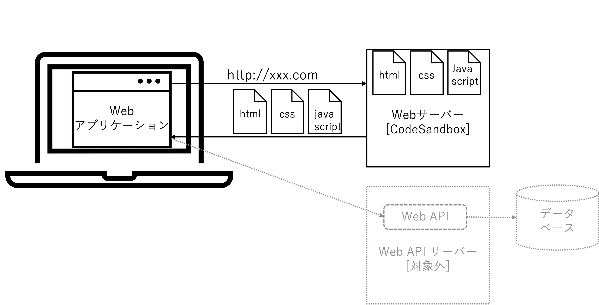

総合演習 ①

目次
- 3限目: 総復習
- 4限目: 総合演習課題
3限目
講義の目的
講義の目的
この講義では、生成AI(人工知能)活用方法の基本を再確認し、AIを用いた創作活動の可能性に改めて焦点を当てます。これまで学んだAI技術がクリエイティブな分野でどのように利用され、どのような影響を与えるかを再度理解し、実践的なスキルを再確認します。
講義スケジュール
| 回数 | 1 (9/25) |
2 (10/2) |
3 (10/9) |
4 (10/16) |
5 (10/23) |
6 (11/6) |
7 (11/13) |
|---|---|---|---|---|---|---|---|
| テーマ | AI基礎 | AIの活用と倫理 | プロンプトエンジニアリング | AIを活用したアプリ生成① | AIを活用したアプリ生成② | 総合演習 | 総合演習 |
| 担当講師 | 伊藤、小島 | 伊藤 | 小島 | 伊藤 | 小島 | 小島、伊藤 | 伊藤、小島 |
アイスブレイク (10分)
- 大学周辺のおすすめのごはん屋さん
- 行ってみたい国
- 最近、欲しいもの
総合演習の進め方
Day1 (今回の講義)
| 時間 | アクティビティ |
|---|---|
| 3限目 |
・総復習 ・補足(アイディエーションと計画づくり、Webアプリケーション開発方法) |
| 4限目 |
・総合課題: アイディエーションと計画づくり ・中間発表 |
総合演習の進め方
Day2 (次回の講義)
| 時間 | アクティビティ |
|---|---|
| 3限目 | ・総合課題: Webアプリケーション開発 |
| 4限目 | ・最終発表: "Demo Day" ※全員発表＆課題提出 |
総復習: AI基礎
(15分)
AI (人工知能)とは
- AIは人間の知的行動をコンピューターで模倣する技術、またはその研究分野を指す
- AIは発展途上であり、歴史とともに人が想像するAIと現実のAIは変わってきている
- 歴史とともにAIを理解することが重要
(参照: 第1回)
生成AIはどのように作られているか
- 機械学習はコンピューターとデータを使って規則性をみつける手法
- ニューラルネットワークは人間の脳神経系にヒントを得て、設計された計算モデル。その規模を大きくしたものがディープラーニング
- トランスフォーマーと自己教師学習により、現代の生成AIが実現できている
(参照: 第1回、第2回)
生成AIの分類

AIにはどのようなリスクがあるか
- AIが職業に与える影響の研究結果が報告されている。労働補完型と労働置換型があることを認識する
- AIリスクは2階建て(1階: 合法性、2階: 社会受容性)
- AIにリスク(情報流出、著作権侵害、ハルシネーション等々)があることを理解して、臨機応変に使いこなそう
(参照: 第2回)
生成AIの使い方

生成AI活用のユースケース
「授業」のユースケース
- インプット: 英語の翻訳、資料の要約、画像の説明、深堀り
- アウトプット: レポートのアイディア出し、レポートの生成、レポートの推敲、プレゼン資料の作成、プレゼン用画像の生成
「創作活動」のユースケース
- アイディア出し: 案だし、フィードバック、深堀り、アドバイス
- ポートフォリオサイトの作成
「就職活動」のユースケース
- 自己分析と計画: 自己分析、タスク化、キャリア相談
(参照: 第3回)
復習してみよう
(15分)
テーマ: 卒業制作のアイディアを出してみよう
例:
- アイディア出し: アイディアだしてもらおう
- フィードバック: アイディアの良いところ、改善が必要なところをもらおう
- 深堀り: 疑問に感じたことを質問し、理解することでアイディアを広げよう
Tips
生成AIに役割を与えてみよう
(例) あなたは笑いで世界を幸せにするコメディアンです。
〇〇に関するアイディアを10個出してください。
3限目後半
総復習: 生成AIを活用したWebアプリケーション開発
(10分)
Webアプリケーションとは?
- Webアプリケーションは、インターネットを介してユーザーがアクセスできるアプリケーションソフトウェアのこと
- 一般的に3つの要素で構成される: クライアント(フロントエンド)、サーバー(バックエンド)、データベース
- フロントエンドはHTML, CSS, JavaScript バックエンドはJavaScript、Python等を使って実装される
- 本講義では主にフロントエンドを対象とし、AIを活用して創作活動を行う
Webアプリケーションの構成
CodeSandboxを活用した開発
- CodeSandboxでWebアプリケーションを開発できる
- 開発したアプリは即座に公開できる
- 様々な共有方法 (URLリンク、ZIPファイルでの共有)
様々なWebアプリケーション
- ポートフォリオサイト
- タイマーアプリ
- クイズアプリ
- 画像共有サイト
- シューティングゲーム
一般的なソフトウェア開発プロセス
- 要件定義: クライアントやプロジェクトの関係者からニーズを聞き、機能や仕様を明確にする
- 設計: システムの全体像等を整理し、決定する
- 開発: Webアプリケーションを実装する
- テスト: アプリケーションが正しく動作することを検証する
- デプロイ: サーバにアプリケーションを配置する
- 運用・保守: アプリケーションが安定して稼働するように監視、修正、改善を行う
より複雑なWebアプリケーション開発
生成AIを活用した試行錯誤
- アイディア → コード生成
- バグ修正/デバッグ
- コードや仕組みの理解
- デザイン変更
- (認証)機能追加
スマートフォンのセンサー活用
センサー
- 加速度計
- ジャイロスコープ
- 方位磁石
- 位置情報
- ライトセンサー
- マイク
- 近接センサー
- カメラ
通信機能
- Wi-Fi
- Bluetooth
- セルラーネットワーク
- NFC
ブラウザを活用した開発
- ローカルストレージ
- セッションストレージ
- クッキー
- 等々
復習してみよう (15分)
センサーを使ったWebアプリケーション開発を復習してみよう
- カメラ表示できるWebページを作ってみよう (15分)
- マイクから音を入力し、波形を出力するWebアプリケーションを作ってみよう (15分)
補足: 計画の重要性
(15分)
計画的なアプローチ
アイディアを創出した後、そのアイディアを実際のWebアプリケーションとして具現化するためには、計画的なアプローチが重要です。
- アイディアの詳細化: アイディアを具体的な機能や要件に分解する
- 優先順位の整理: 重要かつ実装が容易な機能から順にリストアップ
- リスクの洗い出し: 開発において直面する可能性のある問題や障害を予測
演習: 卒業制作の計画を練ってみよう
AIを活用しながら、以下のフォーマットを埋めてみよう
# アイディア名:
## 機能一覧:
※重要かつ実装が容易な機能から順にリスト
1. A
2. B
...
## 実現が難しそうな機能とその理由
## その他
4限目
総合演習課題
総合演習課題
自由な発想でWebアプリケーション開発
生成AIを活用して、アイディアを練り、計画をたてWebアプリケーションを開発してください。
今日中に: アイディアと計画とバージョン1作成まで終わらせてください。
次回: そのアイディアの深掘りや詳細の実装をしてもらいます。
テーマ選定
以下のテーマの中で好きなものを選んでください
- テーマ1: 推し紹介Webサイト
- テーマ2: リアル連携ゲーム
- テーマ3: その他
中間成果物 (※今回)
- アイディアと計画ドキュメント
最終提出物 (※次回)
-
ドキュメント
- アイディアと計画
- Webアプリケーションのキャプチャ動画
- 作成したWebアプリのコード ※ZIPファイル形式
- [オプション] CodeSandbox共有リンク
中間発表
5人 × 7分
まとめ
お疲れ様でした!